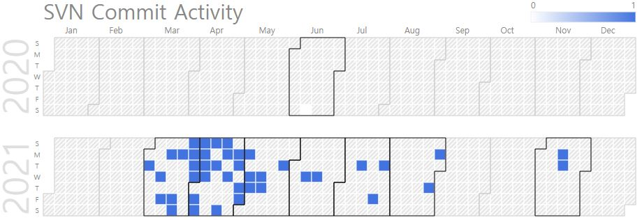

Daeun Heo (Visiting Researcher)
Visiting Researcher, Expert in Node.js |
Repository Commit History
|  |
Introduction
Full Bio Sketch
Ms. Heo received B.S degree in electronics engineering at Kyungpook National University Daegu, Republic of Korea in 2021. Her research fields of interests are newly introduced fields in web programming combining a variety of modern specialized technologies, especially web-based technology. She developed various web services such as asynchronous interaction framework for Verilog simulation virtualization on Node.js, dynamic asynchronous visualization of smart city objects, and web-based asynchronous visualization of LiDAR point of cloud data. Currently, she is focusing on developing education web service that interacts with the user asynchronously by combining server on Node.js with DB on Google sheet and TTS(Text-To-Speech), STT(Speech-To-Text), and Speech-to-Intent service of Dialogflow.
Research Topic

Like Mentor modelsim, there are many programs developed for simulation and synthesis of digital circuits, as well as design and vertification of ASIC, but there are shortcomings that these tools are expensive, can be used only in designated areas where the program has been downloaded, and their installation capacity is large, so it is difficult to install the tools if the computer specifications are low or insufficient. This research has conducted to solve these things and enable to user the same service for users. It’s a real-time asynchronous web application on Node.js, which parses VCD file as JSON file on the server and displays a waveform simulation on the client by receiving a file from the server. First, design a digital circuit by writing a Verilog file and get a VCD file by simulating it. Then the algorithm in the web server built on Node.js reads VCD file and processes it line by line and converts into WaveJSON file. When the algorithm is finished running, the client receives data from the server and constructs the web. At this time, WaveDrom is used to display the Verilog simulation waveform on the web application and show it to the user. In addition, the user can view the waveform the waveform of a specific time period by entering the time zone. All this process occurs asynchronously in real time.
Publications
Conference Publications
Daeun Heo and Daejin Park. Asynchronous Interaction Framework for Verilog Simulation Virtualization on Node.js In IEEE ICEIC 2021, 2021.
Participation in International Conference
IEEE ICEIC 2021, Jeju, Korea
Projects
Verilog Simulation Visualization using node.js
Smart City Big Data Visualization using node.js
LiDAR Point of Cloud Data Visualization using node.js